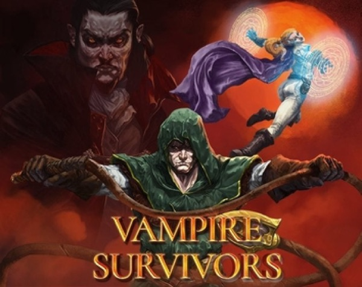

Roguelike · 2022
Vampire Survivors
Almost no inputs, absurd number growth, impossible to put down.

Cover: Wikipedia: Vampire Survivors
Facts
- Released
- 2021-12-17
- Genre
- Roguelike
- Category
- Roguelike
- Platforms
- PC, PlayStation, Streaming & web, Xbox
PC requirements
- Minimum
- [object Object]
- Recommended
- [object Object]